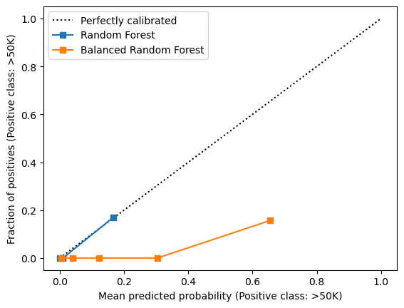
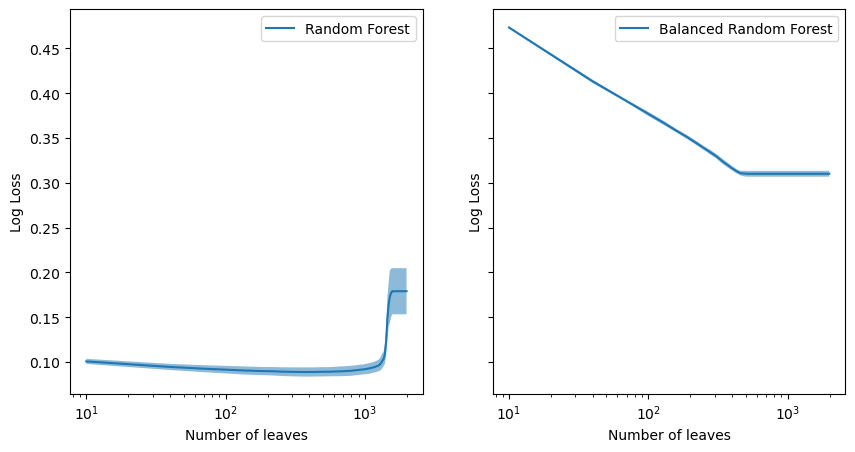

from sklearn.datasets import fetch_openml
X, y = fetch_openml("adult", version=2, as_frame=True, return_X_y=True)
target_count = y.value_counts()
from imblearn.datasets import make_imbalance
minority_class = ">50K"
X, y = make_imbalance(
X,
y,
sampling_strategy={minority_class: int(target_count[minority_class] / 10)},
random_state=0,
)
y.value_counts()
class
<=50K 37155
>50K 1168
Name: count, dtype: int64
from skrub import tabular_learner
from sklearn.ensemble import RandomForestClassifier
from imblearn.ensemble import BalancedRandomForestClassifier
%%time
random_forest = tabular_learner(
RandomForestClassifier(n_estimators=100, random_state=0)
).fit(X, y)
/home/runner/work/calibration-cost-sensitive-learning/calibration-cost-sensitive-learning/.pixi/envs/doc/lib/python3.13/site-packages/skrub/_tabular_pipeline.py:75: FutureWarning: tabular_learner will be deprecated in the next release. Equivalent functionality is available in skrub.tabular_pipeline.
warnings.warn(
CPU times: user 4.84 s, sys: 87.5 ms, total: 4.93 s
Wall time: 3.97 s
%%time
balanced_random_forest = tabular_learner(
BalancedRandomForestClassifier(n_estimators=100, random_state=0)
).fit(X, y)
/home/runner/work/calibration-cost-sensitive-learning/calibration-cost-sensitive-learning/.pixi/envs/doc/lib/python3.13/site-packages/skrub/_tabular_pipeline.py:75: FutureWarning: tabular_learner will be deprecated in the next release. Equivalent functionality is available in skrub.tabular_pipeline.
warnings.warn(
CPU times: user 2.41 s, sys: 79.9 ms, total: 2.49 s
Wall time: 1.53 s
from sklearn.calibration import CalibrationDisplay
disp = CalibrationDisplay.from_estimator(
random_forest, X, y, name="Random Forest", strategy="quantile"
)
CalibrationDisplay.from_estimator(
balanced_random_forest,
X,
y,
ax=disp.ax_,
name="Balanced Random Forest",
strategy="quantile",
)
disp.ax_.legend()
<matplotlib.legend.Legend at 0x7f2a2ea80b90>

import numpy as np
from sklearn.model_selection import ValidationCurveDisplay
# param_name = "randomforestclassifier__max_leaf_nodes"
# param_range = np.arange(10, 2_000, 30) # FIXME: logspace + cast to int
# disp_rf = ValidationCurveDisplay.from_estimator(
# random_forest,
# X,
# y,
# param_name=param_name,
# param_range=param_range,
# scoring="neg_log_loss",
# n_jobs=-1,
# )
# # %%
# param_name = "balancedrandomforestclassifier__max_leaf_nodes"
# disp_brf = ValidationCurveDisplay.from_estimator(
# balanced_random_forest,
# X,
# y,
# param_name=param_name,
# param_range=param_range,
# scoring="neg_log_loss",
# n_jobs=-1,
# )
# # %%
# import joblib
# joblib.dump(disp_rf, "disp_rf.joblib")
# joblib.dump(disp_brf, "disp_brf.joblib")
import joblib
disp_rf = joblib.load("disp_rf.joblib")
disp_brf = joblib.load("disp_brf.joblib")
/home/runner/work/calibration-cost-sensitive-learning/calibration-cost-sensitive-learning/.pixi/envs/doc/lib/python3.13/pickle.py:1760: UserWarning: This figure was saved with matplotlib version 3.10.3 and loaded with 3.10.5 so may not function correctly.
setstate(state)
import matplotlib.pyplot as plt
fig, axs = plt.subplots(figsize=(10, 5), ncols=2, nrows=1, sharey=True, sharex=True)
disp_rf.plot(score_type="test", negate_score=True, score_name="Log Loss", ax=axs[0])
disp_brf.plot(score_type="test", negate_score=True, score_name="Log Loss", ax=axs[1])
axs[0].get_lines()[0].set_label("Random Forest")
axs[1].get_lines()[0].set_label("Balanced Random Forest")
axs[0].legend()
axs[1].legend()
axs[0].set_xlabel("Number of leaves")
axs[1].set_xlabel("Number of leaves")
axs[0].set_xscale("log")
axs[1].set_xscale("log")

# TODO: recalibration and check the log loss of the balanced random forest.
# TODO: Measure ROC AUC vs. max leaf nodes